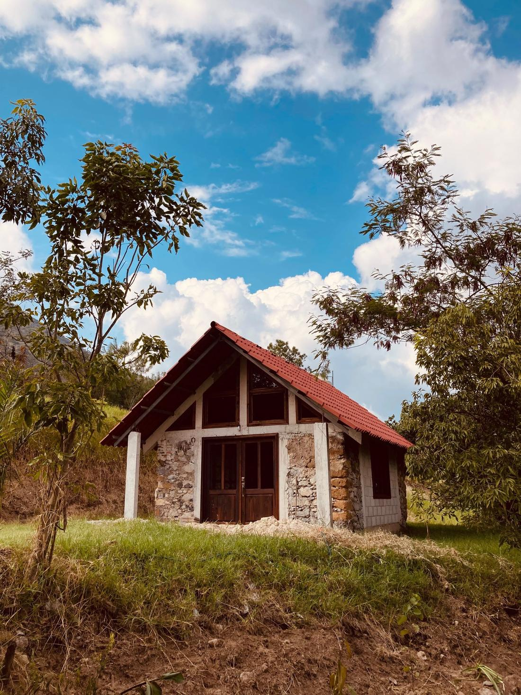

Cabaña para dos
2 personas · 1 recámara
La más íntima del rancho. Baño completo privado, mini cocina equipada y un minibar que corre por cuenta de la casa. No manejamos horario de entrada: llegas cuando te acomode y nosotros te esperamos.
- Baño completo privado
- Mini cocina
- Minibar de cortesía
- Wifi
- Entrada a cualquier hora
$500por noche
Elegir fechas